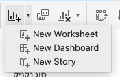
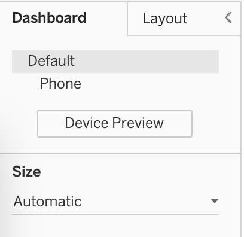
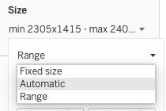

?teacher=1 בכתובת הדף: מה לומר, איפה לעצור ומה לבדוק לפני שממשיכים.דשבורד ניהול אחד של Scoop & Go. למעלה ארבעה כרטיסי KPI: מכירות, רווח, שולי רווח והזמנות. מתחת: גרף עמודות של הסניפים, קו של המכירות החודשיות וגרף של הרכב הקטגוריות. מסנן אזור בפינה, ולחיצה על סניף מסננת את כל השאר. בדרך בונים גם דשבורד שני לפירוט של סניף, ובודקים את כל שש הפעולות של Tableau: סינון, הדגשה, כתובת אינטרנט, מעבר לגיליון, פרמטר וקבוצה.
מה צריך להיות מוכן: scoop_sales_2024_2025.csv טעון ב-Tableau Public (מודול 2), ואתם יודעים לבנות גרף עמודות וקו (מודול 3), ליצור שדה מחושב (מודול 8) ופרמטר (מודול 10). בסעיף הראשון יש טבלה שמרכזת את כל הגיליונות שצריך, אז גם מי שדילג יכול להתחיל. הכול נעשה ב-Tableau Desktop Public Edition. איפה שבגרסת הדפדפן (web authoring) משהו שונה, כתוב.
מגיליונות לדשבורד
מנהלת הרשת של Scoop & Go פותחת כל בוקר שבעה גיליונות, אחד אחרי השני, כדי לענות על שאלה אחת: איך הולכת הרשת? אפשר לחסוך לה את זה. מסך אחד, ושם הכול ביחד.
Dashboard, בעברית גם לוח מחוונים): מסך אחד שמניח כמה גיליונות, מסננים וטקסטים זה ליד זה, כדי לענות על שאלה אחת של קהל אחד. דוגמה: מסך הבוקר של מנהלת הרשת, עם סך מכירות, סניפים, מגמה חודשית והרכב קטגוריות.דבר אחד צריך להבין כבר עכשיו: דשבורד לא מחשב כלום. הוא רק מסדר גיליונות שכבר בנויים. אם גיליון מציג מספר שגוי, הדשבורד יציג אותו שגוי, ובגדול. לכן בונים קודם גיליונות נכונים, ורק אחר כך דשבורד.
| מי מסתכל | השאלה שלו | מה יהיה על המסך |
|---|---|---|
| מנהלת הרשת, בבוקר | איך הולכת הרשת, ואיפה כדאי לבדוק קודם? | ארבעה מספרים גדולים, סניפים, מגמה חודשית, הרכב קטגוריות |
| מנהל סניף | מה קורה אצלי לעומת שאר הרשת? | הסניף שלו מול הממוצע, שעות עומס, המוצרים הנמכרים |
| מי שמחליט על מבצעים | האם הנחות מרוויחות או מפסידות? | רווח לפי גובה ההנחה, לפי סניף |
שלוש שאלות, שלושה דשבורדים. אי אפשר לעשות דשבורד אחד שעונה על הכול. את הראשון בונים עכשיו: זה של מנהלת הרשת.
- הגיליונות כבר בנויים והם ברשימה
Sheets. המשטח של הדשבורד ריק. - גוררים את הגיליון הראשון למשטח. הוא תופס את כל המקום.
- גוררים את הגיליון השני לצד הימני. המשטח מתחלק, והראשון מצטמצם לחצי.
- גוררים את השלישי מתחת לשני. אותם שלושה גיליונות, מסך אחד. שום חישוב לא השתנה.
איך נראה המקום שבו בונים
בתחתית החלון, ליד לשוניות הגיליונות, יש סמל של דשבורד חדש. אפשר גם מתפריט הסמל הראשון בסרגל הכלים.

New Worksheet, New Dashboard ו-New Story. הצילום מ-Tableau Public בגרסה שלי. אצלכם הסמלים עשויים להיראות קצת אחרת.אחרי הלחיצה על New Dashboard הצד השמאלי של המסך משתנה. במקום רשימת השדות מופיעה חלונית עם לשונית Dashboard ולשונית Layout. הנה מפה של המסך כולו:
Size
Sheets
Objects
Branch Sales
Monthly Sales
Category Mix
הדמיה סכמטית. המספרים על המסך לא מייצגים נתונים.
Defaultו-Phone: הפריסות של הדשבורד.Defaultהיא של המחשב. הכפתורDevice Previewמראה איך הדשבורד ייראה במכשירים אחרים (סעיף 2).Size: הגודל של הדשבורד. קובעים אותו לפני שמסדרים את הפריטים (סעיף 2).Sheets: כל הגיליונות בחוברת. גוררים משם למשטח. גיליון שכבר על המשטח מסומן בוי קטן.Objects: דברים שאינם גיליון: מכולות, טקסט, תמונה, כפתור ניווט ועוד. מתחתם המתגTiledו-Floating(סעיף 3).- המשטח עצמו. כל גיליון שעליו הוא פריט, ולכל פריט יש חץ קטן בפינה שפותח תפריט.
מכינים גיליונות, ואז בונים
לפני הדשבורד צריך גיליונות. הטבלה מרכזת שמונה מהם, עם בדיקה לכל אחד. מי שבנה כבר גרפים כאלה במודולים 3 עד 8 יכול לשנות רק את השמות. השמות באנגלית, כי זה מה שיופיע בלשוניות ובדשבורד.
| שם הגיליון | מה בו | בדיקה: מה אמור לצאת |
|---|---|---|
KPI Sales | Sales ב-Text | מספר אחד: 236,821 (הערך המדויק 236,820.9) |
KPI Profit | Profit ב-Text | 120,723 (המדויק 120,722.9) |
KPI Margin | שדה מחושב Profit Margin ב-Text | 51.0% |
KPI Orders | שדה הספירה של הקובץ ב-Text | 6,575 |
Branch Sales | Branch ב-Rows, Sales ב-Columns, ממוינים יורד | 9 סימנים. למעלה Tel Aviv Dizengoff, 44,194.1. למטה Ashdod Beach Pop-up, 5,304.5 |
Monthly Sales | MONTH(Order Date) רציף ב-Columns, Sales ב-Rows | קו עם 24 סימנים. שיא באוגוסט 2025: 23,259.9. שפל בפברואר 2025: 4,097.0 |
Category Mix | Category ב-Rows, Sales ב-Columns, ממוינים יורד | 5 סימנים. Cups 69,470.0, Drinks 54,553.3, Cones 48,317.0, Sundaes 47,037.2, Sticks 17,443.4 |
שבעה גיליונות להתחלה
- פתחו גיליון חדש בחוברת עם Scoop & Go. גררו #Sales אל הכפתור
TextבכרטיסMarks. אם הכפתור נקראLabelאצלכם, גררו אליו. למה: גיליון שכל תוכנו מספר אחד הוא כרטיס KPI. - בכרטיס
Marksלחצו על הפיל Sales בכפתור הימני,Format, ובחלונית שנפתחת בחרו בלשוניתNumbersמספר שלם, בלי ספרות אחרי הנקודה. שנו את שם הלשונית ל-KPI Sales(לחיצה כפולה עליה). למה: אפשר לקרוא את הגיליון בקלות כשבונים את הדשבורד, ואפשר להבדיל בין ארבעה כרטיסים. - לחצו על הלשונית בכפתור הימני,
Duplicate, ושנו את השם ל-KPI Profit. גררו את #Profit מעל Sales שב-Textכדי להחליף אותו. למה: שכפול חוסך לכם את העיצוב, ורק המדד מתחלף. - צרו שדה מחושב (
Analysis,Create Calculated Field) בשםProfit Margin:SUM([Profit]) / SUM([Sales])
בחלונית הנתונים לחצו עליו בכפתור הימני,Default Properties,Number Format,Percentageעם ספרה אחת אחרי הנקודה. שכפלו שוב, קראו ל-KPI Margin, והחליפו את המדד. למה: אחוז רווח הוא מנה של שני סכומים. מחשבים אותו כמנה של הסכומים ולא כממוצע של אחוזים (ראו מודול 8). - שכפלו לגיליון
KPI Ordersוגררו אלTextאת שדה הספירה בתחתית רשימת המדדים. שמו כולל את שם הקובץ, למשלscoop_sales_2024_2025.csv (Count). למה: בקובץ הזה כל שורה היא הזמנה אחת, כך שהספירה היא מספר ההזמנות. - גיליון חדש
Branch Sales: Branch ל-Rows, Sales ל-Columns, ואז מיון יורד בכפתור המיון שבסרגל הכלים. למה: גרף עמודות ממוין נקרא כדירוג. - גיליון חדש
Monthly Sales: גררו 📅Order Date ל-Columns, פתחו את החץ של הפיל ובחרוMonthמהקבוצה השנייה בתפריט (זו שהדוגמה בה היא May 2015, והפיל יוצא ירוק). גררו Sales ל-Rows. למה: חודש רציף מציג ציר זמן אמיתי, בלי לערבב שנים (מודול 4). - גיליון חדש
Category Mix: Category ל-Rows, Sales ל-Columns, מיון יורד.
תוצאה צפויה: לפי הטבלה למעלה. כמה בדיקות נוספות: בשורת המצב בתחתית החלון של Branch Sales כתוב 9 marks וסך SUM(Sales): 236,821. ב-Monthly Sales כתוב 24 marks. ב-Category Mix כתוב 5 marks. Tableau עשוי להציג עיגול אחר בכרטיס (236,821 לעומת 236,820.9). הערך באמת 236,820.9. אם יצא לכם אחר, בדקו שהקובץ נטען במלואו: שורות 6,575.
הדשבורד הראשון: שלושה גיליונות על משטח אחד
- לחצו על סמל הדשבורד החדש בתחתית החלון (או
Dashboard,New Dashboard). שנו את שם הלשונית ל-Practice. למה: זה דשבורד לתרגול. את דשבורד הניהול הסופי נבנה בסעיף האחרון. - בחלונית
Sheetsגררו אתBranch Salesאל מרכז המשטח. למה: ככה מתחילים. הגיליון הראשון תופס את כל המשטח. - גררו את
Monthly Salesלצד הימני של הגיליון הראשון. תראו אזור אפור שמסמן איפה יונח. שחררו. למה: גרירה לקצה מחלקת את המשטח, וגרירה למרכז מחליפה את הגיליון. - גררו את
Category Mixאל החלק התחתון שלMonthly Sales. למה: הגרף הקטן עדיף לצד גרף שכבר נקרא כמגמה. - לחצו על אחד הגיליונות. בפינה הימנית העליונה שלו יופיעו סמלים קטנים. החץ הקטן הוא התפריט של הפריט. בתפריט אפשר להפעיל ולכבות את
Titleשל הגיליון (בגרסה שלכם ייתכן ששמות הפריטים שונים מעט). בדקו את הכותרות: אם הכותרת של הגיליון זהה לשם הלשונית ולא מוסיפה מידע, כבו אותה. למה: כל כותרת תופסת מקום, והמקום בדשבורד יקר. - אם גרף לא ממלא את הריבוע שלו, לחצו עליו ובסרגל הכלים פתחו את רשימת ה-Fit ובחרו
Entire View. למה: ככה הגרף מתאים את עצמו לגודל הפריט.
תוצאה צפויה: שלושה פריטים: גרף הסניפים משמאל (9 עמודות), קו המכירות החודשיות מימין למעלה (24 נקודות), ומתחתיו גרף הקטגוריות (5 עמודות). המספרים בגרפים זהים לגיליונות המקוריים: למשל Tel Aviv Dizengoff עדיין 44,194.1. בלשונית Layout, ב-Item hierarchy, תראו מכולה אחת בתוך השנייה (עוד נחזור לזה בסעיף 3).

Default ו-Phone, Size ורשימת Sheets. גיליון שהוסף מסומן בוי. הגיליון התחתון נבחר, ולכן בפינה שלו כלי הפריט: X להסרה, סמל מעבר לגיליון, משפך (Use as Filter) וחץ התפריט.הדשבורד הוא שכבת הצגה. החישוב, המסננים והמיון נמצאים בגיליונות. מי שרוצה לשנות מספר, חוזר לגיליון ומשנה שם, והשינוי מופיע בכל דשבורד שמשתמש בו. זה מה שהופך דשבורדים לקלים לתחזוקה, וגם מה שמסביר למה גיליון שבור מקלקל את כולם.
בארגונים רבים הדשבורד של הנהלה נפתח במסך אחד ובו שורה של מספרים גדולים בראש, ומתחתיה גרפים שמסבירים אותם. את הסדר הזה תראו בעשרות דוגמאות ציבוריות. בסעיף 9 נדבר על למה הוא עובד.
לא כל גיליון עולה לדשבורד. מי שמכניס לדשבורד כל גיליון שבנה ברגע שהוא נראה יפה, מקבל מסך שאי אפשר לקרוא. כל פריט שמוסיפים צריך לענות על השאלה של הקהל. אם לא, הוא נשאר גיליון ולא עולה למסך.
שאלה: יש לכם בחוברת עשרה גיליונות על Scoop & Go, והמנהלת רוצה לדעת "איפה כדאי לבדוק קודם?". אילו מהם הייתם מעלים לדשבורד, ואילו משאירים בחוברת? מה השאלה שהייתם שואלים את המנהלת לפני שאתם בוחרים?
מה הדשבורד עושה בנתונים?
גוררים גיליון שני אל קצה ימין של גיליון שכבר על המשטח. מה קורה?
Swap). צף נהיה פריט רק אם בחרתם Floating לפני הגרירה או החזקתם Shift בזמן הגרירה.Title או Show Title. שאלו את הכיתה "מה עדיף: לבנות דשבורד גדול אחד או שניים קטנים?" ותנו לסעיף 9 לענות.גודל הדשבורד ופריסות למכשירים
המנהלת פותחת את הדשבורד על מחשב נייד. הבעלים של הרשת פותח אותו בטלפון. ואתם מטמיעים אותו באתר, בעמודה שאתם לא שולטים ברוחב שלה. אותו דשבורד, שלושה מסכים. לכן קובעים גודל לפני שמסדרים.
Size): הגדרה שקובעת איך הדשבורד מתנהג כשחלון הצפייה משתנה: נשאר קבוע, נמתח בטווח, או ממלא את החלון. דוגמה: Range עם מינימום 1000x800 ומקסימום 1200x900.| אפשרות | מה קורה כשהחלון משתנה | מתאים ל | סיכון |
|---|---|---|---|
Fixed size | גודל קבוע בפיקסלים. חלון קטן ממנו: פסי גלילה. חלון גדול ממנו: רווח ריק סביב. | פריסה מדויקת עם פריטים צפים, או צילום מסך להדפסה | על מסך קטן הצופה גולל. בהטמעה באתר זה לא גמיש |
Range | מתכווץ ומתרחב בין מינימום למקסימום. מתחת למינימום יש גלילה, מעל המקסימום רווח ריק. | מסכים שדומים בצורתם: מחשב נייד ושולחני, או הטמעה באתר | צריך לבחור טווח הגיוני ולבדוק את שני הקצוות |
Automatic | ממלא את החלון כולו. | פריסה צמודה (Tiled), אחרי בדיקה | התוצאה על מסכים שונים עלולה להיות לא צפויה |
המלצה מקובלת למי שמטמיע דשבורד ב-Tableau Public: Automatic או Range, ולא Fixed. כך כתוב בשאלות הנפוצות הרשמיות של Public. למי שרוצה נקודת התחלה: Range עם מינימום 1000x800 ומקסימום 1200x900 (זו המלצה שלי לשימוש בדף אינטרנט, לא כלל של Tableau).

Default ו-Phone (פריסות), Device Preview ומתחתם Size. בצילום הגודל Automatic.
Fixed size, Automatic, Range. ברירת המחדל משתנה בין גרסאות. תמיד פתחו את Size ובחרו בעצמכם.בואו נראה מה הצופה רואה
ההדמיה חישבה את הכללים מהטבלה למעלה. בחרו אפשרות והזיזו את רוחב החלון. שימו לב מתי מופיעה גלילה ומתי נשאר רווח ריק.
קובעים גודל ובודקים שני קצוות
- בדשבורד
Practice, בחלונית השמאלית, פתחו אתSizeובחרוRange. הקלידו מינימום 1000 על 800 ומקסימום 1200 על 900. למה: טווח שומר על קריאות במחשב נייד קטן וגם במסך גדול. - שנו את רוחב החלון של Tableau (גררו את הקצה). כשהחלון צר מ-1000 אמורים להופיע פסי גלילה. למה: זה המינימום שקבעתם.
- שנו את
Sizeל-Fixed sizeעל 1200 על 800. פתחו שוב את הדשבורד בחלון צר יותר. למה: ככה רואים שפריסה קבועה אינה מצטמצמת, וצריך לגלול. - החזירו ל-
Rangeעם אותם ערכים.
תוצאה צפויה: בשדה Size מופיע טקסט שמתחיל ב-min 1000x800 ומסתיים ב-max 1200x900, כמו בצילום של דף הגודל (שם הערכים אחרים). הנתונים לא משתנים: Branch Sales עדיין 9 סימנים.
פריסות למכשירים: אותו דשבורד, מסך אחר
Device Layout): גרסה נוספת של אותו דשבורד, מסודרת למסך אחר. הנתונים והגיליונות זהים, ורק הסידור משתנה. דוגמה: בטלפון כרטיסי ה-KPI יושבים אחד מתחת לשני, ובמחשב כולם בשורה.בחלונית של הדשבורד לחצו על Device Preview. מעל הדשבורד נפתח סרגל שבו בוחרים סוג מכשיר (מחשב, טאבלט, טלפון). הכפתור Add Phone Layout יוצר פריסת טלפון, והיא מופיעה מתחת ל-Default, כמו בצילום dash-pane למעלה. מה שחשוב לדעת:
- פריסת טלפון חדשה נוצרת אוטומטית מהפריסה הרגילה. סמל מנעול פתוח אומר שהיא עדיין מסונכרנת איתה. מנעול סגור אומר שאתם מסדרים אותה בנפרד.
- בסרגל יש אפשרויות גודל לפריסה:
Default,Fit Allו-Fit Width. ההמלצה לטלפון היאFit Width: הרוחב מתאים למסך והגובה ממשיך כלפי מטה בגלילה. - אפשר להוסיף לפריסה רק פריט שכבר קיים בפריסה הרגילה. הסרת פריט מפריסת טלפון משאירה אותו בפריסה הרגילה.
Branch Sales
Monthly Sales
הדמיה סכמטית: פריסת טלפון, פריטים אחד מתחת לשני.
- המסגרת צרה, עד 500 פיקסלים. Tableau מציג את פריסת הטלפון, אם הגדרתם אחת: הכול בעמודה אחת.
- המסגרת בין 501 ל-800. מוצגת פריסת הטאבלט, אם יש. אין פריסה כזאת? בדרך כלל מוצגת הפריסה הרגילה.
- מעל 800: הפריסה הרגילה,
Default. לפי התיעוד הבחירה נעשית לפי הממד הקטן של המסגרת. כדי לבדוק, מטמיעים ומקטינים את החלון (מודול 14).
רואים את הדשבורד בטלפון
- בדשבורד
Practiceלחצו עלDevice Preview. למה: ככה רואים את הדשבורד בגודל של מכשיר בלי לעבור למכשיר. - בסרגל שמעל הדשבורד בחרו סוג מכשיר
Phone(או לחצו על סמל הטלפון) וצפו בתצוגה. למה: אנחנו בודקים לפני שמוסיפים פריסה. - לחצו על
Add Phone Layout. בחלונית השמאלית מופיעה שורתPhoneמתחת ל-Default. למה: מעכשיו יש פריסה נפרדת למכשיר הזה. - בגודל של הפריסה בחרו
Fit Width. - חזרו ל-
Defaultבלחיצה על השורה שלה.
תוצאה צפויה: בפריסת הטלפון שלושת הגיליונות מסודרים בעמודה אחת: Branch Sales, Monthly Sales ו-Category Mix, ואפשר לגלול למטה. בפריסה הרגילה שום דבר לא השתנה. אם אתם משנים משהו בפריסת הטלפון ומוחקים פריט, הוא עדיין קיים ב-Default.
גודל הוא החלטה על הצופה, לא על הדשבורד. שאלו קודם: על איזה מסך הוא יפתח? אם התשובה "מחשב נייד וטלפון", מתכננים שתי פריסות. אם "כל מי שנכנס לאתר", בוחרים Range או Automatic ובודקים בשני הקצוות.
בשאלות הנפוצות של Tableau Public כתוב מפורשות להגדיר גודל דשבורד Automatic או Range כשמטמיעים באתר, או לבנות דשבורדים נפרדים לגדלים שונים ולהחליף ביניהם. את ההטמעה עצמה נראה במודול 14.
פריסות מכשירים ו-Show sheets as tabs. לפי התיעוד, כשמפרסמים דשבורד עם פריסות מכשירים לא מסמנים את האפשרות להציג את הגיליונות כלשוניות, כי זה מפריע לזיהוי גודל הדפדפן. בגרסה של Tableau Public השם של האפשרות עשוי להיות שונה (Show workbook sheets as tabs). נחזור לזה בפרסום.
גודל קבוע גדול מדי. דשבורד Fixed של 1920 על 1080 נראה מצוין על המסך שבנית עליו. על מחשב נייד של 1366 פיקסלים הצופה יגלול הצידה כדי לראות חצי מהמסך. בונים לפי הצופה הצר ביותר, לא לפי המסך הגדול שלכם.
שאלה: אתם מטמיעים את דשבורד Scoop & Go בדף של הרשת. הרוחב של העמודה באתר משתנה בין 400 ל-900 פיקסלים בין מחשב לטלפון. איזה גודל תבחרו, ומה עוד תבדקו לפני שתפרסמו?
Range או Automatic, לא Fixed, כי העמודה משתנה. ובנוסף פריסת טלפון, כי בין 400 ל-500 פיקסלים הדשבורד מציג את פריסת הטלפון. בודקים בשלושה רוחבים: צר, בינוני, רחב. בודקים גם שהטקסטים נשארים קריאים, ושכל פריט נשאר ברוחב סביר.הדשבורד הוא Fixed size של 1000 פיקסלים, והחלון של הצופה רחב 1400. מה הוא רואה?
Automatic ממלא את החלון.מחקתם את Category Mix מפריסת הטלפון. מה קרה לו בפריסה הרגילה?
Default. ולהפך: אפשר להוסיף לפריסת מכשיר רק פריט שכבר נמצא ב-Default.Size יש בגרסה שלכם (בצילום שלי: Automatic); (2) איך נקרא כפתור הפריסה (Add Phone Layout); (3) סף הבחירה בין פריסות (500 ו-800) בהטמעה אמיתית: המחקר מציין שהבחירה נעשית לפי הממד הקטן של המסגרת, ובדרך כלל זה הרוחב. מומלץ להטמיע את הדשבורד בדף בדיקה, לשנות את רוחב החלון ולראות. זה מתחבר לעמוד ההטמעה במודול 14.אובייקטים, מכולות וצמוד מול צף
בדשבורד של Scoop & Go צריך לא רק גרפים: כותרת, שורה של ארבעה כרטיסי KPI, אולי לוגו ומשפט שמסביר איך משתמשים. כל זה נכנס למשטח, והשאלה היא איך מסדרים שזה יישאר מסודר כשהחלון משתנה.
מה אפשר להניח על המשטח
בחלונית של הדשבורד, מתחת לרשימת הגיליונות, יש רשימה של Objects. הנה מה שיש בה, ומה כדאי לדעת על כל אחד:
| אובייקט | בשביל מה | מה כדאי לדעת |
|---|---|---|
Horizontal ו-Vertical | מכולות: מחזיקות פריטים בשורה או בעמודה | עיקר הסעיף הזה |
Text | כותרת, הסבר, הערת מקור | טקסט עשיר: גופן, צבע, גודל. הטקסט קבוע. טקסט שמשתנה עם הבחירה בונים בגיליון (סעיף 7) |
Image | לוגו או איור | מקובץ או מכתובת. כתובת חייבת להתחיל ב-https. תמונה שמוטמעת בחוברת מגדילה אותה, אז קטנים ומכווצים |
Web Page | מציג דף אינטרנט בתוך הדשבורד | חלק מהאתרים אוסרים הצגה בתוך דף אחר, ואז תראו מסגרת ריקה |
Blank | ריווח | שימושי בתוך מכולה כדי לדחוף פריט הצידה |
Navigation | כפתור שעובר לדשבורד, לגיליון או לסיפור אחר | בזמן עריכה הכפתור עובד בלחיצה עם Alt (ב-Windows) או Option (ב-Mac) |
Download | כפתור שמייצא את הדשבורד ל-PDF, PowerPoint או תמונה | לא הוכח שהוא מופיע לצופים ב-Tableau Public. בדקו אם זמין אצלכם |
Extension | תוסף מבחוץ | ב-Public דורש הרשאה בהגדרות הפרסום. לא נתרגל |
ויש עוד כפתור שאינו ברשימה: בתפריט של פריט (החץ בפינה) יש Add Show/Hide Button, שמוסיף כפתור שמסתיר ומציג את הפריט. מניחים פריט כזה בתוך מכולה משלו, אחרת כשהוא נסגר נשאר חור.
צמוד או צף
Tiled): פריט בשכבה אחת שחולק את המשטח עם שכניו ומתכווץ ומתרחב כשהדשבורד משתנה. דוגמה: גרף הסניפים וגרף החודשים זה לצד זה, כל אחד תופס חצי.Floating): פריט שיושב מעל פריטים אחרים, במיקום ובגודל שקבעתם. דוגמה: לוגו שמונח מעל הפינה של הכותרת.צמוד הוא ברירת המחדל וגם ההמלצה. צף לוקחים רק למה שחייב לשבת מעל משהו. איך הופכים פריט לצף: בוחרים Floating ברשימת Objects לפני הגרירה, או מחזיקים Shift בזמן הגרירה, או בתפריט של פריט קיים בוחרים Floating.
- שני פריטים צמודים. כל אחד תופס חצי מהמשטח.
- מוסיפים פריט צמוד שלישי. השטח מתחלק מחדש בין שלושתם, ואף אחד לא מכסה אחר.
- מוסיפים לוגו כפריט צף. הוא יושב מעל הכול, במקום שקבעתם, ולא לוקח שטח מאף אחד.
- החלון מצטמצם. הפריטים הצמודים מצטמצמים יחד. הלוגו הצף נשאר בגודל שהגדרתם, ועלול לכסות חלק מגרף. לכן בודקים כל פריסה עם פריטים צפים בכל גודל שחשוב לכם.
ההנפשה מראה את הרעיון בצורה פשוטה. בתוכנה, ההתנהגות המדויקת של פריט צף כשהגודל משתנה תלויה בסוג הגודל שקבעתם. מדריכי Tableau ממליצים לתת לפריטים צפים גודל קבוע על דשבורד בגודל קבוע.
מכולות
Container): פריט שמחזיק פריטים אחרים ומסדר אותם בשורה (אופקית) או בעמודה (אנכית). דוגמה: מכולה אופקית שמחזיקה את ארבעת כרטיסי ה-KPI.- מכולה אופקית (
Horizontal) מחלקת את הרוחב בין הפריטים שבתוכה. מכולה אנכית (Vertical) מחלקת את הגובה. - כשגוררים גיליון לצד גיליון אחר, Tableau יוצר מכולות בעצמו. בלשונית
Layoutרשימה בשםItem hierarchyמראה את העץ של המכולות והפריטים. זה המקום להבין למה פריט יושב איפה שהוא יושב. Distribute Evenlyבתפריט של מכולה נותן לכל הפריטים שבה אותו גודל. לפי התיעוד זה עובד על מכולות שהוספתם בעצמכם (בגרסה שלכם הפקודה עשויה להופיע תחתDistribute Contents).Remove Containerמשחרר את הפריטים ומוחק את המכולה.- אל תוסיפו מכולות סתם. כל מכולה מוסיפה עבודה, ולפי התיעוד מכולות מיותרות מאטות את הציור.
הדמיה סכמטית. זה העץ שנבנה בסוף הסעיף ובדשבורד הסופי.
בונים פריסה בעצמכם
זה המקום לנסות בלי לקלקל כלום. בנו כמה פריסות, הזיזו פריט צף, ושנו את רוחב החלון. ההדמיה בודקת את הפריסה שלכם ומעירה כשמשהו לא טוב. ההדמיה פשוטה יותר מהתוכנה: כאן בוחרים מכולה ולוחצים על "הוסף", ובתוכנה גוררים.
הוספה
מכולות
הפריט הנבחר
גודל הדשבורד
נסו: לחצו על "פריסה לדוגמה". אחר כך צמצמו את החלון ל-400 ובדקו מה ההדמיה אומרת. גררו את הלוגו על גרף. לחצו עליו ובחרו מקשי חצים (עם Shift זזים עשרה פיקסלים בכל לחיצה, כמו בתוכנה).
שורת כרטיסי KPI ושורה ראשית, עם מכולות
- בדשבורד
Practice, בלשוניתLayout, ראו אתItem hierarchy. אם הוא לא מסודר כמו העץ שלמעלה, נסדר עכשיו. למה: כשרואים את העץ, מבינים מה אפשר לגרור לאן. - גררו מרשימת
ObjectsמכולהHorizontalאל החלק העליון של המשטח (מעל כל הגיליונות). שחררו כשהקו האפור מופיע לאורך כל הרוחב. למה: זו שורת ה-KPI. - גררו אל תוכה, אחד אחרי השני, את
KPI Sales,KPI Profit,KPI Marginו-KPI Orders. בכל גרירה שחררו בקצה הימני של הפריט הקודם. למה: בכל שחרור כזה Tableau מוסיף את הפריט לאותה שורה. - לחצו על המכולה (על הקו שלה, לא על כרטיס), פתחו את החץ בפינה ובחרו
Distribute Evenly. אם אין לכם, חפשו תחתDistribute Contents. למה: ארבעה כרטיסים באותו רוחב נראים מסודרים. - לכל כרטיס KPI: הסתירו את הכותרת (
Titleבתפריט הפריט) וקבעוFitל-Entire View. למה: מה שחשוב הוא המספר, וכותרת של גיליון רק תופסת מקום. - בדקו ש-
Monthly Salesו-Category Mixיושבים אחד מעל השני באותה מכולה אנכית מימין לגרף הסניפים. כך הם נבנו בסעיף 1. אם לא, גררו מכולהVerticalלצד הימני של הגרף והניחו בה את שניהם. למה: שני גרפים משתפים עמודה אחת.
תוצאה צפויה: ב-Item hierarchy רואים מכולה אופקית אחת עם ארבעה כרטיסי KPI שרוחבם שווה (כל אחד בערך ברבע מהרוחב), ומתחתיה מכולה אופקית שבה גרף הסניפים משמאל ומכולה אנכית עם גרף החודשים והקטגוריות מימין. הערכים בכרטיסים: 236,821, 120,723, 51.0%, 6,575.
לוגו צף בדשבורד נפרד לבדיקה
- צרו דשבורד חדש בשם
Float Test. קבעוSizeל-Fixed sizeעל 1200 על 800. למה: פריטים צפים עובדים הכי טוב על גודל קבוע. לא נקלקל אתPractice. - גררו את
Branch Salesלמשטח. למה: צריך משהו צמוד מתחת לצף. - ברשימת
Objectsלחצו עלFloating, ואז גררו אובייקטTextאל הפינה הימנית העליונה. כתבוScoop & Goבגופן גדול. למה: ככה עושים כותרת צפה שלא דוחפת את הגרף. - בלשונית
Layout, בקטע של הפריט הנבחר, קבעו מיקוםx = 20,y = 10ורוחב240וגובה50. למה: מיקום מדויק בפיקסלים שלמים, כמו שאומרת ההמלצה לדשבורד בגודל קבוע. - לחצו על הפריט ולחצו על מקש חץ ימינה כמה פעמים. אחר כך Shift וחץ. למה: חץ זז פיקסל אחד, ועם Shift עשרה.
- פתחו את
Item hierarchy.
תוצאה צפויה: ב-Item hierarchy הטקסט מופיע בקבוצה נפרדת של פריטים צפים, מתחת לעץ הצמוד. הוא יושב מעל הגרף. אם הזזתם את הטקסט למקום שבו הוא מכסה עמודה של הגרף, העמודה נעלמת מאחוריו. זו הסיבה שמניחים צף רק מעל רווח.
דשבורד יציב נבנה מצמוד, ומשאירים צף לדברים קטנים שחייבים לשבת מעל אחרים: לוגו, מקרא על מפה, כפתור. בלשונית Layout ה-Item hierarchy הוא הדרך להבין מה עושה מה. מי שמתחיל מצף לכל פריט מקבל מסך שנראה טוב רק בגודל שבנה בו.
קל לזהות דשבורד שנבנה על צף: מקטינים את החלון והפריטים מתחילים לעלות זה על זה. לעומת זאת דשבורד שנבנה מצמוד ומכולות מתכווץ בצורה אחידה. זו הסיבה שבהנחיות של Tableau למעצבים רואים שוב ושוב את ההמלצה להשתמש במכולות.
פריט מוסתר משאיר חור. אם משתמשים ב-Add Show/Hide Button על פריט שיושב ישירות במכולה הראשית, אחרי ההסתרה נשאר חלל ריק שאף אחד לא מילא. הפתרון: להניח את הפריט שרוצים להסתיר בתוך מכולה משלו, כדי שהמכולה תתכווץ.
גוררים ופוגעים בפריט הלא נכון. כשלוחצים על גרף בדשבורד, Tableau בוחר לפעמים את המכולה ולא את הגרף. אם ההגדרות שאתם משנים לא משפיעות על הגרף, בדקו מה נבחר: בלשונית Layout הפריט הנבחר מודגש ב-Item hierarchy. לחיצה על שם הפריט בעץ היא הדרך הבטוחה לבחור אותו.
שאלה: למה שורת כרטיסי ה-KPI יושבת במכולה אופקית ולא בארבעה פריטים צפים ליד זה, כל אחד במקום מדויק?
Distribute Evenly אחת פותרת הכול. שימו לב גם שאם אחד הכרטיסים מוסר, שלושת האחרים נמתחים ומתמלאים, ואין חור.איזה פריט נכון להפוך לצף?
שורת ה-KPI היא מכולה אופקית עם ארבעה כרטיסים. מה עושה Distribute Evenly?
Distribute Evenly שמה לכולם אותו חלק (תשובה ב מתאימה למכולה אנכית). מחיקת מכולה היא Remove Container (ד). הפיכה לצף היא פקודה אחרת (ג).מוסיפים Show/Hide Button למסנן שיושב ישירות בשורה הראשית, ואחרי הסגירה נשאר חור. מה הפתרון?
Distribute Evenly או Distribute Contents) ואת שדות המיקום ב-Layout: שמות הקטעים משתנים בין גרסאות. ב-web authoring של Public לפי הדף הרשמי יש תמיכה במכולות ובאובייקטים. אובייקט Download ותוספים לא נכללים בתרגילים, כי הזמינות שלהם ב-Public לא אומתה. אם יש סטודנט שהלוגו שלו עצמו לא נטען, בדקו שהכתובת מתחילה ב-https.מסננים בדשבורד: לאילו גיליונות הם מגיעים
המנהלת של אזור הדרום אומרת: "אני רוצה לראות רק את הדרום." אתם לא רוצים שתי גרסאות של הדשבורד. מוסיפים מסנן, והוא משנה את הכול. או שלא משנה את הכול. כאן קורית רוב הבלבול, ולכן שווה להבין את זה היטב.
Filter card): תיבה על הדשבורד שבה הצופה בוחר ערכים, והגיליונות מתעדכנים. דוגמה: רשימת האזורים ובה בחירה ב-South, כך שרק שלושת סניפי הדרום נשארים.כרטיס מסנן הוא פריט בדשבורד, אבל הוא שייך לגיליון. כדי להציג אותו: בגיליון הרצוי שמים את Region ב-Filters (מודול 6). בדשבורד לוחצים על הגיליון, פותחים את החץ שבפינה שלו, וב-Filters מסמנים את Region. הכרטיס מופיע ליד הגיליון.
שני דברים נקבעים בתפריט של הכרטיס (החץ הקטן שבפינה שלו): איך הוא נראה ולאילו גיליונות הוא פועל.
איך הכרטיס נראה
בתפריט הכרטיס בוחרים את סוג התצוגה. הנה הרשימה, עם דוגמה לכל אחת מהאזורים של Scoop & Go (Center, Jerusalem, North, South):
Region
Multiple Values (list)Region
Single Value (list)Region
Region
הדמיה סכמטית. בנוסף יש Wildcard Match (הקלדה של חלק מהטקסט) ותצוגת מחוון לערכים מספריים. השמות המדויקים עשויים להשתנות בגרסה שלכם.
איך בוחרים? אזורים הם ארבעה ערכים בלבד, ולכן אפשר רשימה. תשעת הסניפים עדיפים כרשימה נפתחת, כי היא תופסת שורה אחת. כלל פשוט: ככל שיש יותר ערכים, התצוגה צריכה להיות קטנה יותר.
לאילו גיליונות הוא פועל
ברירת המחדל מפתיעה: מסנן שנוצר בגיליון אחד פועל רק עליו. כדי שיגיע לשאר הגיליונות פותחים את תפריט הכרטיס, Apply to Worksheets, ובוחרים:
Only This Worksheet: רק הגיליון שבו נוצר.Selected Worksheets...: מסמנים אילו גיליונות (רשימה).All Using This Data Source: כל הגיליונות שמבוססים על אותו מקור נתונים.
(יש גם אפשרות של מקורות קשורים, אצלנו לא רלוונטית. בגרסה שלכם ייתכן שהשמות שונים מעט.) בדשבורד שכל גיליונותיו על קובץ אחד, All Using This Data Source היא הבחירה הרגילה.
- אין סינון. כל הרשת: 236,821 מכירות, 9 סניפים, שיא באוגוסט 2025 ו-Cups על 69,470.0.
- בוחרים South והמסנן נוצר ב-
Branch SalesעםOnly This Worksheet. רק גרף הסניפים משתנה: 3 עמודות. הכרטיס של סך המכירות עדיין מראה את כל הרשת. Selected Worksheetsעם סימון על כרטיס המכירות, גרף הסניפים וגרף החודשים. הם מראים דרום: 55,575 ושיא של 5,402.1 ביולי 2025. אבלCategory Mixעדיין מראה את כל הרשת.All Using This Data Source: כל ארבעת הגיליונות מתייחסים לדרום. Cups: 16,648.4.
מסנן אזור על כל הדשבורד
- בדשבורד
Practiceלחצו עלBranch Sales. אם Region לא ב-Filtersשל הגיליון, עברו אליו וגררו אותו לשם (בחלון המסנן סמנו הכול). חזרו לדשבורד. למה: רק מסנן שנמצא בגיליון אפשר להציג כרטיס שלו. - לחצו על
Branch Sales, פתחו את החץ בפינה,Filters, וסמנו Region. כרטיס מסנן נוסף לדשבורד. למה: ככה הצופה מקבל ידית. - בכרטיס בחרו
Southבלבד. שימו לב מה משתנה: רק גרף הסניפים. כרטיסי ה-KPI ושאר הגרפים נשארים כמו שהיו. למה: זו ברירת המחדל. מסנן שנוצר בגיליון פועל רק עליו. - בתפריט הכרטיס:
Apply to Worksheets,All Using This Data Source. למה: ככה הוא מגיע לכל הגיליונות. - חזרו על הניסוי עם
Selected Worksheets...(בחרו את כל הגיליונות פרט ל-Category Mix), ואז עםOnly This Worksheet.
תוצאה צפויה עם South בכרטיס:
| הגדרה | KPI Sales | Branch Sales | שיא ב-Monthly Sales | העמודה Cups |
|---|---|---|---|---|
Only This Worksheet | 236,821 | 3 עמודות | 23,259.9 (Aug 2025) | 69,470.0 |
Selected Worksheets בלי Category Mix | 55,575 | 3 עמודות | 5,402.1 (Jul 2025) | 69,470.0 |
All Using This Data Source | 55,575 | 3 עמודות | 5,402.1 (Jul 2025) | 16,648.4 |
שלושת סניפי הדרום בגרף הסניפים: Eilat Promenade 31,473.7, Beer Sheva Grand Mall 18,797.2, Ashdod Beach Pop-up 5,304.5 (סכום 55,575.4). גרף החודשים של הדרום נשאר עם 24 סימנים, כי שלושת הסניפים פעלו כל התקופה.
כרטיס מסנן נקי, שאפשר להבין
- בתפריט של כרטיס Region בחרו
Multiple Values (dropdown). למה: רשימה נפתחת תופסת שורה אחת ולא חמש. - בתפריט של הכרטיס בחרו
Edit Title...וכתבוSelect a region. למה: כותרת שאומרת מה לעשות עדיפה על שם שדה. - שימו את הכרטיס במכולה האופקית העליונה, מעל הגרפים. למה: מסנן שהצופה רואה ראשון הוא מסנן שבאמת משתמשים בו.
- אם יש כמה כרטיסים של אותו מסנן (בגלל שהצגתם אותו מכמה גיליונות), השאירו אחד והסירו את השאר בעזרת ה-X שבפינה של הכרטיס. למה: כמה כרטיסים זהים מבלבלים את הצופה, וגם במדריך ההתחלה הרשמי של Tableau מסירים כרטיסים כפולים.
תוצאה צפויה: כרטיס אחד בשם Select a region, בגובה שורה, שמציג (All) כשלא בחרתם דבר. כשבוחרים South ו-North יחד, ב-Branch Sales נשארות 4 עמודות: Eilat, Beer Sheva, Ashdod וגם Haifa German Colony. סכום המכירות שלהן: 82,964.6 (55,575.4 של הדרום ועוד 27,389.2 של הצפון).
מסנן הוא החלטה על כל הדשבורד, לא על גרף אחד. אם רק חלק מהגיליונות מסוננים, הצופה רואה מספרים של קבוצות שונות זה ליד זה ובטוח שהם שייכים לאותה קבוצה. לכן כמעט תמיד בוחרים All Using This Data Source. רק כשגיליון מציג בכוונה את כל הרשת כנקודת ייחוס, מוציאים אותו מהסינון, ואומרים את זה בכותרת שלו.
בדשבורדים של הנהלה יש בדרך כלל מסנן או שניים בלבד, ואחריהם פעולות לחיצה על הגרפים (הסעיף הבא). כשיש הרבה כרטיסי מסנן, הדשבורד נראה כמו טופס ומאט. בהנחיות הביצועים של Tableau מומלץ להשתמש בפעולות סינון במקום בהרבה מסננים מהירים.
הצופה רואה שני מספרים שלא מסתדרים. סיננתם South, והכרטיס אומר 236,821 בזמן שגרף הסניפים מראה שלוש עמודות בלבד. הסיבה כמעט תמיד: המסנן נוצר בגיליון אחד ופועל רק עליו. בודקים Apply to Worksheets.
Only Relevant Values. בכרטיס יש אפשרות להציג רק ערכים שרלוונטיים לבחירות אחרות. היא נוחה, אבל לפי הנחיות הביצועים של Tableau היא מוסיפה שאילתות ומאטה, והרשימה משתנה בכל בחירה. בדשבורד קטן אין בכך בעיה, בדשבורד גדול כדאי להימנע.
שאלה: מי שרואה את הדשבורד מבקש "שהכרטיס של סך הרשת יישאר תמיד על הכול, גם כשבוחרים אזור, כדי להשוות". איך תעשו את זה, ומה תכתבו על הכרטיס כדי לא לבלבל?
Selected Worksheets, ומסירים את הסימון מהגיליון הזה. את הכותרת של הכרטיס משנים ל-Whole chain, not filtered (סך הרשת, לא מסונן). בלי הכותרת הצופה יניח שהמספר שייך לאזור שבחר.יצרתם מסנן Region ב-Branch Sales והצגתם אותו בדשבורד. בלי לשנות שום הגדרה, על אילו גיליונות הוא פועל?
Apply to Worksheets. תשובה ב היא הפירוש הנפוץ והשגוי. ג מתבלבלת בין מסנן לפעולה (הסעיף הבא).בכרטיס Region בחרתם South עם All Using This Data Source. כמה עמודות יהיו ב-Branch Sales, ומה הסכום שלהן?
Apply to Worksheets, Edit Title..., שמות סוגי התצוגה). הסעיף לא מחייב מסננים על ממדים עם הרבה ערכים: אם הסטודנטים רוצים Branch ככרטיס, תשעה ערכים בלבד, וזה בסדר.פעולות: לוחצים על גרף וכל השאר מגיב
המנהלת רואה שהדרום חלש. היא לא רוצה לפתוח מסנן ולבחור אזור. היא רוצה ללחוץ על הסניף ולראות מה קורה שם: המגמה החודשית שלו, הקטגוריות שלו, המספרים שלו. בשביל זה יש פעולות.
Action): כלל בדשבורד שאומר: כשהצופה לוחץ על סימן בגיליון אחד או מעביר עליו עכבר, יקרה משהו בגיליון אחר או מחוץ לדשבורד. דוגמה: לחיצה על העמודה של Tel Aviv Dizengoff מסננת את שאר הגיליונות לסניף הזה.יש שש פעולות. בסעיף הזה נבנה שתיים, ובסעיף הבא את ארבע האחרות. הטבלה מראה את כולן, כל אחת עם דוגמה מ-Scoop & Go.
| פעולה | מה קורה | דוגמה |
|---|---|---|
Filter | גיליונות אחרים מסוננים לפי הסימן שנבחר | לחיצה על סניף: המגמה והקטגוריות מראות רק אותו |
Highlight | סימנים תואמים נצבעים, והשאר מעומעמים | עכבר על סניף: הקו שלו בין תשעה קווים מודגש |
Go to URL | נפתחת כתובת אינטרנט שמשתמשת בערך של הסימן | לחיצה על מוצר: חיפוש של שמו |
Go to Sheet | עוברים לגיליון, דשבורד או סיפור אחר | לחיצה על סניף: נפתח דשבורד הפירוט שלו |
Change Parameter | ערך של פרמטר משתנה לפי הסימן | לחיצה על קטגוריה: הפרמטר הופך ל-Cups |
Change Set Values | חברי קבוצה (Set) משתנים לפי הסימן | בחירת סניפים: הם הופכים לקבוצה, והקטגוריות מושוות להם |
כל פעולה מוגדרת בשלושה חלקים: מי מפעיל (גיליון מקור), מתי (טריגר), ומה קורה (גיליונות יעד או יעד אחר). שלושה טריגרים אפשריים:
Hover: העברת עכבר מעל סימן.Select: לחיצה על סימן. הטריגר הרגיל לסינון.Menu: לחיצה על סימן נבחר ואז הפעולה מוצעת בתפריט הצף של הסימן.
איפה מגדירים: Dashboard בתפריט העליון, Actions..., ואז Add Action. כשכמה פעולות מופעלות מאותה לחיצה, Tableau מריץ אותן בסדר קבוע: פרמטר, קבוצה, סינון, מעבר לגיליון, הדגשה, כתובת. לפי דף ההשוואה הרשמי של Tableau אפשר לראות פעולות בדפדפן (web authoring), אבל להגדיר אותן צריך ב-Desktop. בגלל זה כל התרגילים כאן ב-Tableau Desktop Public Edition.
איך Tableau מריץ פעולה: הנפשה
- גרף הסניפים הוא המקור. כל הסניפים מוצגים, והגרפים האחרים מראים את כל הרשת.
- הצופה לוחץ על העמודה של Tel Aviv Dizengoff. עמודה זו נבחרת, והאחרות מתעממות.
- הפעולה (טריגר
Select) קוראת את הערךBranch = Tel Aviv Dizengoff. - הפעולה מסננת את הגיליונות היעד. המגמה החודשית והקטגוריות מראות עכשיו רק את Dizengoff. גרף המקור עצמו לא מסונן: כל העמודות נשארות.
הקיצור: Use as Filter
כשלוחצים על גיליון בדשבורד, בפינה שלו מופיע סרגל כלים קטן. אחד הסמלים בו הוא משפך. זה Use as Filter, ולחיצה עליו יוצרת פעולת סינון בלי להגדיר כלום. זו הדרך המהירה, והיא עובדת מצוין לרוב המקרים: הגיליון הופך למקור, ושאר הגיליונות על אותו מקור נתונים הופכים ליעדים. אפשר לראות את הסמלים בצילום של הדשבורד הראשון בסעיף 1.
לוחצים על סניף וכל הדשבורד מגיב
- בדשבורד
Practiceלחצו עלBranch Sales(על רווח בפריט, לא על עמודה). בסרגל שבפינה לחצו על המשפך (Use as Filter). למה: זה הקיצור שהופך את הגיליון למקור של פעולת סינון. - לחצו על העמודה של
Tel Aviv Dizengoff. למה: זה מפעיל את הפעולה. - לחצו על העמודה של
Ashdod Beach Pop-up. - לחצו על רווח ריק בתוך
Branch Sales, כדי לבטל את הבחירה. - פתחו את
Dashboard,Actions.... ראו את הפעולה שנוצרה ובדקו את שמה וההגדרות שלה.
תוצאה צפויה:
| מה נבחר | KPI Sales | KPI Profit | KPI Margin | KPI Orders | Monthly Sales | Category Mix |
|---|---|---|---|---|---|---|
| כלום | 236,821 | 120,723 | 51.0% | 6,575 | 24 סימנים | 5 עמודות, Cups 69,470.0 |
| Tel Aviv Dizengoff | 44,194 | 22,979 | 52.0% | 1,235 | 24 סימנים, שיא 4,091.2 (Jul 2024) | Cups 13,311.6, Drinks 10,943.6, Cones 9,273.0, Sundaes 7,852.2, Sticks 2,813.7 |
| Ashdod Beach Pop-up | 5,305 | 2,585 | 48.7% | 139 | 3 סימנים: 1,010.0, 2,017.8, 2,276.7 (Jun עד Aug 2025) | Cups 1,761.2, Sundaes 1,160.0, Cones 1,041.4, Drinks 885.7, Sticks 456.2 |
בגרף הסניפים עצמו כל תשע העמודות נשארות, והנבחרת מודגשת. הפעולה לא מסננת את גיליון המקור. Ashdod הוא סניף שפעל שלושה חודשים בלבד, ולכן יש לו שלושה סימנים בקו. זה לא באג. הציר עשוי להצטמצם לאותם החודשים.
הגדרה מלאה, ושליטה על מה מסונן
הקיצור מסנן הכול. כשרוצים שליטה, מגדירים בעצמכם. בחלון Add Action, Filter... רואים את אותן ההגדרות שמסתתרות מאחורי המשפך:
Add Filter Action
הדמיה סכמטית. הפריטים והשמות עשויים להיראות קצת שונה בגרסה שלכם.
- Source Sheets: מי מפעיל. Target Sheets: מי מושפע.
- Run action on: הטריגר.
- Clearing the selection will: מה קורה כשמבטלים את הבחירה.
Show all valuesמחזיר הכול.Leave the filterמשאיר את הסינון האחרון.Exclude all valuesמסתיר הכול. - Target Filters: לפי אילו שדות מסננים.
All Fieldsמשתמש בכל הממדים של הסימן.Selected Fieldsמאפשר לבחור, למשל רק Branch.
פעולת סינון בהגדרה מלאה: כרטיסי ה-KPI נשארים על כל הרשת
Dashboard,Actions.... בחרו את הפעולה שנוצרה מהקיצור (השם שלה מתחיל ב-Filterומסתיים ב-(generated)) ומחקו אותה בכפתורRemove. למה: אנחנו מגדירים אותה מחדש בעצמנו.Add Action,Filter.... שם:Branch to Charts. למה: שם ברור עוזר למי שיבוא אחריכם.- ב-
Source Sheetsסמנו רק אתBranch Sales. ב-Target Sheetsסמנו רק אתMonthly SalesואתCategory Mix. למה: ככה הכרטיסים הגדולים נשארים על כל הרשת. Run action on:Select.Clearing the selection will:Show all values.Target Filters:Selected Fields, וסמנו רק Branch. אישור.- לחצו על Tel Aviv Dizengoff. אחר כך לחצו עליו שוב כדי לבטל.
- חזרו להגדרות ושנו את
Clearing the selection willל-Leave the filter. חזרו על שלב 5. - החזירו ל-
Show all values.
תוצאה צפויה: בשלב 5 הכרטיסים ממשיכים להציג 236,821, 120,723, 51.0%, 6,575 גם כשהסניף נבחר, וגרף החודשים מראה שיא 4,091.2 (Dizengoff) והקטגוריות Cups 13,311.6. אחרי לחיצה שנייה הכול חוזר לכל הרשת. בשלב 6, אחרי הלחיצה השנייה, המגמה והקטגוריות נשארות על Dizengoff, למרות שהבחירה בוטלה. זה הכוח של Leave the filter, והסכנה שלו.
הדגשה: לראות במקום לסנן
סינון מסיר מהמסך את מה שלא נבחר. לפעמים צריך לראות את הבחירה בתוך ההקשר. תשעה קווים של תשעה סניפים הם ספגטי, וצריך להבין איפה אחד מהם. זה מה ש-Highlight עושה: הסימנים התואמים נשארים בצבע, והשאר מעומעמים.
עכבר על סניף מדגיש את הקו שלו
- גיליון חדש
Monthly by Branch: 📅Order Date ל-Columnsכחודש רציף, Sales ל-Rows, ו-Branch ל-Color. למה: קו לכל סניף, כדי שאפשר יהיה להדגיש אחד מהם. - דשבורד חדש
Highlight Test. גררו אליו אתBranch SalesואתMonthly by Branch. למה: דשבורד נפרד שלא מתערבב בפעולת הסינון של Practice. Dashboard,Actions...,Add Action,Highlight.... שם:Hover Branch. מקור:Branch SalesבדשבורדHighlight Test. הרצה:Hover. יעד:Monthly by Branch. למה: הדגשה נעשית בדרך כלל בהעברת עכבר, כי היא לא משנה את הנתונים.- ב-
Target HighlightingבחרוSelected Fieldsוסמנו Branch. אישור. למה: ככה ההדגשה מחפשת התאמה רק לפי סניף. - העבירו עכבר על העמודות בגרף הסניפים.
תוצאה צפויה: ב-Monthly by Branch יש 178 סימנים בתשעה קווים (שבעה סניפים עם 24 חודשים כל אחד, Rehovot Mall עם 7 ו-Ashdod Beach Pop-up עם 3). כשהעכבר על Tel Aviv Dizengoff, הקו שלו נשאר צבוע ושמונת האחרים הופכים אפורים. כשהעכבר על Ashdod, רואים קו קצר של שלוש נקודות בסוף 2025.
ננסה בלי לקלקל: הדמיה על הנתונים
ההדמיה בנויה על מכירות Scoop & Go (6,575 שורות). בחרו סוג פעולה וטריגר, ואז לחצו על העמודות. נסו גם את Leave the filter: בחרו סניף, בטלו את הבחירה, וראו מה קורה.
Monthly sales by Branch
Sales by Category
בהדמיה Ctrl או Shift עם לחיצה מוסיפים עוד סניף. בטריגר Hover אין מסך מגע: אם אתם בטלפון, עברו ל-Select.
פעולה הופכת דשבורד מתמונה לכלי. במקום לשאול "מה בדרום?" ולבנות מסנן, הצופה לוחץ ורואה. סינון מתאים כשהשאלה היא "תראה לי רק את זה". הדגשה מתאימה כשהשאלה היא "איפה זה בתוך הכול?".
בדשבורדים של הנהלה, גרף מרכזי שמסנן את שאר הגרפים בלחיצה הוא מבנה שחוזר שוב ושוב. הצופה לומד אותו מהר, והדשבורד לא צריך כרטיסי מסנן רבים.
נשארתם עם סינון אחרי ביטול הבחירה. אם Clearing the selection will מוגדר ל-Leave the filter, ביטול הבחירה משאיר את הסינון. הצופה חושב שהוא רואה הכול, וזה לא נכון. ברוב המקרים בוחרים Show all values.
טריגר Hover לסינון. סינון בהעברת עכבר גורם לדשבורד לקפוץ בכל תנועה, ובמסך מגע הוא בכלל לא עובד. סינון: Select. הדגשה: Hover מתאים.
הדגשה שלא קורה כלום. פעולת הדגשה מחפשת את הסימן בגיליון היעד לפי שדה. אם גיליון היעד לא מכיל את השדה (למשל גרף הקטגוריות לא מכיל סניף), אין מה להדגיש. הדגשה תעבוד רק על גיליון שמציג את אותו ממד.
שאלה: הצופה לוחץ על Dizengoff, ואחרי כמה שניות לא יודע איך לחזור לתצוגה של כל הרשת. מה תוסיפו לדשבורד, ואיפה?
Click a branch to filter. Click it again to clear. (לחצו על סניף כדי לסנן. לחצו שוב כדי לבטל.) זו העצה של Tableau: לומר בתת הכותרת איך מקיימים אינטראקציה. מוסיפים אותה כאובייקט Text. בנוסף כדאי שכותרת קטנה תגיד איזה סניף מוצג (סעיף 7).איזה טריגר מתאים לפעולת סינון בדשבורד שגם מסכי מגע משתמשים בו?
Select עובד בלחיצה או במגע, ולכן הוא הטריגר הרגיל לסינון. Hover דורש עכבר ומזיז את הדשבורד בכל תנועה. Menu דורש שלב נוסף, ומתאים לפעולות כמו מעבר לכתובת.הגדרתם פעולת הדגשה לפי Branch מ-Branch Sales אל Category Mix, והיא לא עושה כלום. למה?
Monthly by Branch.לחצתם על Dizengoff ב-Branch Sales שהוא מקור של פעולת סינון. מה קורה לתשע העמודות בגרף עצמו?
Use as Filter בגרסה שלכם (משפך בצילום שלי); (2) מה שם הפעולה שנוצרת אוטומטית (בגרסאות שראינו: Filter 1 (generated)); (3) הטריגר Hover בהדגשה. אחרי שהסטודנטים מבצעים את ההדמיה, שאלו: "למה בגרף הקטגוריות אין שינוי במצב Highlight?". אם מישהו מקבל פעולה שהוא לא הגדיר, בדקו אם נשארה פעולה מהקיצור ב-Dashboard, Actions....ארבע פעולות נוספות: כתובת, גיליון, פרמטר וקבוצה
סינון והדגשה הם עיקר העבודה. ארבע הפעולות האחרות פותרות בעיות מוגדרות: לפתוח דף חיצוני, לעבור לדשבורד פירוט, לשנות פרמטר בלחיצה ולהשוות קבוצה נבחרת לשאר.
כתובת אינטרנט (Go to URL)
לחיצה על מוצר פותחת חיפוש
- גיליון חדש
Item Sales: Item ל-Rows, Sales ל-Columns, מיון יורד. למה: חמישה עשר מוצרים, ואפשר ללחוץ על כל אחד. - דשבורד חדש
Branch Detail, וגררו אליו אתItem Sales. למה: פעולות מוגדרות על דשבורד. Dashboard,Actions...,Add Action,Go to URL.... שם:Search item. מקור:Item Sales. הרצה:Menu. למה: כתובת חיצונית עדיף לפתוח בכוונה, לא בכל לחיצה.- בשדה הכתובת הקלידו
https://www.google.com/search?q=<Item>(אפשר גם להוסיף אתItemמכפתורInsert).URL Target:New Browser Tab. אישור. למה: חייבים קידומתhttps://, והשדה בסוגריים מוחלף בערך של הסימן. - לחצו על העמודה של
Milkshake, ואז על הפעולה שמופיעה בתפריט הצף.
תוצאה צפויה: נפתחת לשונית דפדפן עם חיפוש של Milkshake. המוצר הנמכר ביותר ברשת הוא Milkshake: 24,902.8 (אחריו Pistachio Cup 20,532.0). בגיליון 15 עמודות. השדה חייב להיות בתצוגה: שדה מצטבר (SUM) לא מופיע ברשימת ההוספה.
מעבר לגיליון (Go to Sheet)
לחיצה על סניף פותחת את דשבורד הפירוט שלו
- גיליון
Hour Sales: #Order Hour הוסב לממד (Convert to Dimension) ב-Columns, Sales ב-Rows. הוסיפו אותו ל-Branch DetailמעלItem Sales. למה: פירוט של שעות היום. - ב-
Practiceהוסיפו פעולתGo to Sheet...בשםOpen detail: מקורBranch Sales, הרצהSelect, יעד: הדשבורדBranch Detail. למה: Select הוא הטריגר המתאים לניווט. - הוסיפו פעולת סינון מ-
Branch SalesאלItem Salesו-Hour Sales(Select,Show all values). למה: מעבר גיליון לא מעביר סינון. סינון עושה זאת. - הוסיפו ל-
Branch DetailאובייקטNavigationשחוזר ל-Practice. למה: כך חוזרים בלי הלשוניות. - לחצו על
Eilat Promenade.
תוצאה צפויה: נפתח Branch Detail וה-Item Sales מראה 15 מוצרים של Eilat: ראשון Milkshake 3,348.8, אחריו Brownie Sundae 2,865.2. ב-Hour Sales יש 14 שעות (10 עד 23). השיא בשעה 21: 4,365.8.
פרמטר וקבוצה
לחיצה על קטגוריה משנה פרמטר (תרגיל בונוס: לפי המחקר פעולות פרמטר וקבוצה זמינות ב-Desktop, ו-Public היא אותה תוכנה. אם הן חסרות אצלכם, דלגו.)
- צרו פרמטר
Selected Category, סוגString, ערך נוכחיCups. למה: פעולה יכולה לשנות רק פרמטר שקיים. - שדה מחושב
Is Selected:[Category] = [Selected Category]
למה: זה מה שמשתמש בפרמטר, ובלעדיו הוא לא עושה כלום. - גיליון
Branch Cups Share: Branch ל-Rows, Sales ל-Columns,Is Selectedל-Color. הציבו אותו עםCategory Mixבדשבורד חדשActions Lab. - הוסיפו פעולת
Change Parameter...: מקורCategory Mix,Select, פרמטרSelected Category, שדה מקור Category, צבירהNone. - לחצו על Drinks.
תוצאה צפויה: כל עמודת סניף מתפצלת לשני חלקים: Cups ושאר. עם Cups: Tel Aviv Dizengoff 13,311.6 מתוך 44,194.1. אחרי הלחיצה על Drinks החלק של Dizengoff הוא 10,943.6. בגיליון 18 סימנים (9 סניפים כפול 2).
בחירת סניף הופכת אותו לקבוצה, והקטגוריות מושוות (בונוס, כמו הקודם)
- לחצו על Branch בכפתור ימני,
Create,Set.... שםSelected Branch. סמנו כל סניף אחד ואשרו. למה: פעולה משנה חברים בקבוצה קיימת. - גיליון
Category In Out: Category ל-Rows, Sales ל-Columns,Selected Branchל-Color. הוסיפו ל-Actions Lab. - פעולת
Change Set Values...: מקורBranch Sales,Select, יעדSelected Branch. כשמנקים:Add all values to set. - לחצו על Tel Aviv Dizengoff.
תוצאה צפויה: 10 עמודות (5 קטגוריות כפול In ו-Out). In: Cups 13,311.6, Drinks 10,943.6, Cones 9,273.0, Sundaes 7,852.2, Sticks 2,813.7. Out: Cups 56,158.4, Drinks 43,609.7, Cones 39,044.0, Sundaes 39,185.0, Sticks 14,629.7.
הפעולות הללו מרחיבות את מה שהצופה יכול לעשות בלי לדעת Tableau: לחיצה אחת פותחת פירוט, חיפוש, שינוי מדד או השוואה. כל אחת מוסיפה גם משהו להסביר, לכן מוסיפים רק את מה ששואל את השאלה של הקהל.
ניווט בין דשבורד סיכום לדשבורד פירוט הוא מבנה נפוץ: מסך אחד לתמונה הגדולה, ומסך שני לבירור. הלחיצה מעבירה גם את הבחירה.
כתובת בלי https:// לא תיפתח כראוי. וגם: פרמטר שלא משתמשים בו בשום חישוב לא ישנה כלום, והפעולה "תצליח" בלי תוצאה.
מעבר לגיליון בלי סינון. Go to Sheet רק עובר. אם גיליון היעד נפתח עם כל הרשת, חסרה פעולת סינון באותה לחיצה.
שאלה: המנהלת רוצה ללחוץ על סניף ולראות את הסניף ברקע של כל שאר הסניפים בקו החודשי, בלי להעלים את האחרים. איזו פעולה, ואיזה טריגר?
Highlight עם Hover (או Select), כי המטרה לראות את הבחירה בתוך ההקשר. סינון היה מעלים את האחרים.מה צריך כדי שלחיצה על סניף תפתח דשבורד פירוט מסונן לאותו סניף?
יצרתם פרמטר והגדרתם פעולת פרמטר, אבל הגרף לא משתנה. מה הסיבה הסבירה?
Is Selected.Menu. הריצו לפני השיעור. הכתובת של חיפוש גוגל מופיעה כדוגמה במחקר. אפשר לבחור כל כתובת https אחרת.כותרות, צבע ועיצוב: איך בודקים דשבורד
דשבורד יכול להיות נכון ועדיין לא להיקרא. הסעיף הזה עוסק במה שהצופה רואה לפני שהוא קורא מספר: כותרת, היררכיה, צבע ורעש.
כותרות וטקסט שמשתנה
כותרת טובה שואלת שאלה או אומרת מה לעשות: How is the chain doing?. מתחתיה שורה שמסבירה איך משתמשים: Click a branch to filter. טקסט בדשבורד (Text) הוא קבוע. כדי שטקסט ישתנה עם הבחירה בונים גיליון קטן עם שדה מחושב.
תווית שאומרת איזה סניף מוצג
- שדה מחושב
Selection Label:IF COUNTD([Branch]) = 1 THEN MIN([Branch]) ELSE STR(COUNTD([Branch])) + " branches" END
למה: סניף אחד מציג את שמו, וכמה סניפים מציגים את המספר. - גיליון חדש
Selection Label: גררו את השדה אלText. הגדילו גופן. הוסיפו אותו לשורת הכותרת שלPracticeוהשאירו את פעולת הסינון בתוקף. למה: הפעולה מסננת גם אותו. - לחצו על סניפים שונים, ואחר כך סננו South בכרטיס.
תוצאה צפויה: בלי בחירה: 9 branches. עם South: 3 branches. אחרי לחיצה על Dizengoff: Tel Aviv Dizengoff.
טולטיפ (Tooltip בכרטיס Marks) הוא המקום לפרט שני. בעריכה אפשר להכניס שדות: <Branch>, <SUM(Sales)>. תרשים בתוך טולטיפ קיים ב-Desktop, אבל לא הוכח ב-Public, ולכן בדקו אם זמין אצלכם. כדי להסביר נקודה בגרף יש הערה: כפתור ימני על סימן, Annotate, Mark, למשל על שיא אוגוסט 2025 (23,259.9).
צבע
- רוב הדשבורד באפור וכחול, וצבע בולט אחד להדגשה. לא יותר משתי פלטות.
- לא מסתמכים על צבע בלבד: אדום וירוק נראים דומים לחלק מהצופים. כחול וכתום עדיפים, ו-
Color Blindמוצע בעריכת הצבעים (Edit Colors). - ניגודיות טקסט: לפחות 4.5 ל-1. טקסט #6b7280 על לבן הוא 4.83 (עובר), #9ca3af הוא 2.54 (נכשל), וכתום #e8741f הוא 3.02 (נכשל כטקסט קטן).
- סדר העיצוב: חוברת, אחר כך גיליון, ורק אז פרט. גופן, צבע, גבולות, הצללה וריפוד נמצאים בתפריט
Formatובתפריט של כל פריט.
שאלה: ההנחיות של Tableau מדברות על סריקה משמאל לימין, והצופים שלכם קוראים עברית. מה עושים?
מצאו את שמונה הטעויות
זה דשבורד עם שמונה טעויות עיצוב. לחצו על מקומות חשודים. יש גם שני מקומות תקינים.
Region
Region
עיצוב טוב הוא הסרה: כל פריט, צבע וקו שלא מוסיפים מידע, מוציאים. מה שנשאר הוא מה שהצופה צריך.
לפי הנחיות Tableau, שניים או שלושה גרפים בדשבורד, כותרת שאומרת איך משתמשים, ובדיקה כפי שהצופה רואה אותו (מכשיר, גודל).
צבע שמסתמך על ירוק ואדום. הוסיפו חץ או מילה, או עברו לכחול וכתום.
הרבה גרפים בדשבורד אחד. כל גיליון מוסיף שאילתות וזמן טעינה. כאן יש ארבעה כרטיסים ושלושה גרפים, והם נבנו בגיליון נפרד לכל כרטיס. בדשבורד כבד איחדו אותם. סימנים בתצוגה: פחות מ-1,000 לנגישות וביצועים. בתשעה סניפים יש 9 סימנים, בסניף לפי חודש 178, ובשורה לפי הזמנה 6,575.
איזה טקסט על רקע לבן עובר ניגודיות של 4.5 ל-1?
איזה גרף מתאים להשוואת תשעה סניפים?
Color Blind ושם Annotate בדקו בתוכנה.בונים את דשבורד הניהול וסיכום
מרכיבים הכול: מכולות, כרטיסי KPI, גרפים, מסנן, פעולה ותווית. בכל שלב יש מספר לבדיקה. את המעבר לפרסום נעשה במודול הבא.
דשבורד Scoop & Go Management
- שכפלו את
Practice(כפתור ימני על הלשונית,Duplicate Dashboard) וקראו ל-Scoop Management. קבעוRangeמ-1000x800 עד 1200x900. בדיקה: הגודל מופיע בחלונית. - סדרו מכולות לפי העץ שבסעיף 3: שורת כותרת, שורת KPI עם
Distribute Evenly, ושורה ראשית. בדיקה: ארבעה כרטיסים: 236,821, 120,723, 51.0%, 6,575. - ודאו שיש שלושה גרפים: 9 עמודות, 24 סימנים בקו, 5 עמודות קטגוריה. הסירו כל גיליון תרגול אחר מהמסך.
- כרטיס מסנן
Select a regionעםAll Using This Data Source, ופעולתUse as FilterעלBranch Sales. הוסיפו אתSelection Labelלכותרת ושורת הסבר:Click a branch to filter. Click again to clear. - עיצוב: כחול ואפור בלבד, גופן אחד, כותרות גיליון כבויות, ריפוד קטן, טקסט כהה על בהיר.
- פריסת טלפון:
Fit Width, הסירו ממנה אתCategory Mix.
תוצאה צפויה: בדקו ארבעה מצבים:
| מצב | Sales | Profit | Margin | Orders | תווית |
|---|---|---|---|---|---|
| הכול | 236,821 | 120,723 | 51.0% | 6,575 | 9 branches |
| South | 55,575 | 27,915 | 50.2% | 1,530 | 3 branches |
| Tel Aviv Dizengoff | 44,194 | 22,979 | 52.0% | 1,235 | Tel Aviv Dizengoff |
| South, ואז Eilat Promenade | 31,474 | 15,741 | 50.0% | 866 | Eilat Promenade |
Tableau עשוי להציג עיגול אחר בכרטיסים מהערך המדויק (למשל Sales של Dizengoff הוא 44,194.1).
- דשבורד מסדר גיליונות בנויים. קובעים גודל (
Rangeלהטמעה) ומוסיפים פריסת טלפון. - צמוד ומכולות לבסיס, צף רק ללוגו.
Item hierarchyמראה את העץ. - מסנן נוצר בגיליון.
All Using This Data Sourceמביא אותו לכולם. - שש פעולות: סינון, הדגשה, כתובת, מעבר, פרמטר וקבוצה. סינון ב-
Select, ובודקיםClearing. - עיצוב הוא הסרה: כותרת ברורה, צבע מצומצם, ניגודיות, לא צבע בלבד.
בחרתם South והכרטיס עדיין מראה 236,821. מה בודקים?
Apply to Worksheets.לחצתם על Ashdod ובקו החודשי שלוש נקודות בלבד. מדוע?
מה מבדיל בין סינון להדגשה?
במודול הבא מפרסמים את הדשבורד ומטמיעים אותו: מודול 14, סיפורים, פרסום והטמעה.